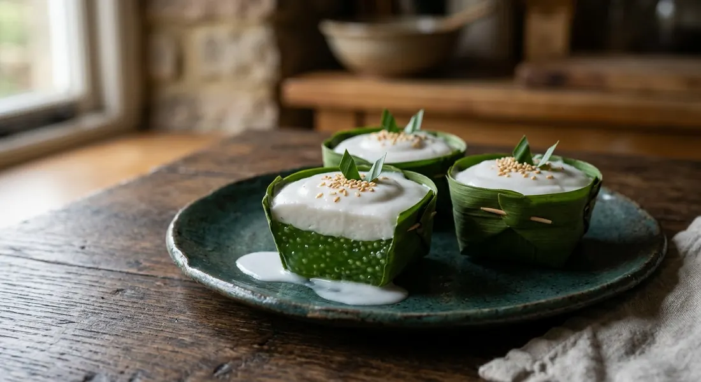

A pandan-scented rice-flour pudding with diced water chestnuts, set in a small banana-leaf cup and finished with a salty coconut cream that settles on top — sweet below, savoury-sweet above, eaten with a teaspoon.

ขนมตะโก้ (khanom tako) is a two-layer dessert: a sweet starch base — scented, studded with a filling — set in a small cup woven from banana leaf, with a salty-sweet coconut cream poured over it that firms into a distinct top layer. You eat it straight from the cup with a teaspoon, and the leaf cup is part of the point: unwrap the bottom, and the whole thing comes out clean.
Aroifin's explainer sorts the family into two classic kinds. ตะโก้ถั่ว is the old mung-bean version — hulled mung beans ground fine and stirred with sugar and coconut milk until the paste is thick enough to cut into squares. ตะโก้แป้งข้าวเจ้า is the two-layer rice-flour version sold at markets today, the one most people mean by the name: a rice-flour body with a coconut top that carries just enough salt to sharpen it.
The scent is where tradition and fashion diverge. The old way, as Aroifin records, scented the body with flower water — jasmine floated in water overnight — or the even older trick of ควันเทียน, a lit candle held under a lid so the smoke perfumes the starch. Pandan, which Wongnai's recipe uses, is the modern favourite: greener, easier, and it dyes the base as it scents it. The filling changes with the maker — water chestnut is the classic, corn, young coconut, taro and longan all common.
| Thai | English | Amount |
|---|---|---|
| แป้งข้าวเจ้า | Rice flour | 2 cups |
| แป้งมัน | Tapioca starch | 4 tbsp |
| น้ำใบเตย | Pandan water (blended leaves, strained) | 2 cups |
| น้ำเปล่า | Water | 2 cups |
| น้ำตาลทราย | Granulated sugar | ⅔ cup |
| แห้ว (กระป๋อง) | Water chestnuts, diced (canned is fine) | 1 can |
| กะทิ | Coconut milk (for the topping) | 2 cups |
| น้ำตาลทราย | Sugar (for the topping) | 1 tbsp |
| เกลือป่น | Salt (for the topping) | 2 tsp |
The classic mung-bean version (EzyThai): 1 cup mung bean starch, 3 cups jasmine-scented water, 2 cups sugar, ½ cup pandan juice and ½ cup boiled diced water chestnuts stirred over medium heat until thick — topped with ½ cup rice flour, 2 cups coconut milk and 1 tsp salt. The steamed version (Aroifin): rice flour, jasmine water and sugar stirred, poured into banana-leaf cups half-full, a piece of chestnut added, steamed about 15 minutes until set, then the cooked coconut cream poured over. The sago version (The Asianparent): small sago pearls boiled in pandan water with sugar and steamed hulled mung beans, with a coconut-milk and rice-flour top.
The starch. Wongnai builds the base from rice flour plus tapioca starch; EzyThai uses mung bean starch alone (the old ตะโก้ถั่ว way); Aroifin uses rice flour on its own; The Asianparent boils small sago pearls instead of a flour. Aroifin's background note says the rice-flour two-layer version is what is sold today, and even adds that some makers swap in cornflour — so the base is the one ingredient no two sources agree on.
The scent. EzyThai scents the body with jasmine water (น้ำกลิ่นมะลิ); Aroifin floats real jasmine in water overnight and records the candle-smoke trick (ควันเทียน) as the old method; Wongnai uses pandan water, which Aroifin describes as the modern preference. Same dessert, three generations of perfume.
How the base cooks. Wongnai, EzyThai and The Asianparent all stir the starch over heat in a pot until thick, then ladle it into cups. Aroifin instead pours the raw mixture into banana-leaf cups and steams it for about fifteen minutes until it sets, then pours the coconut on top. Both give a firm base; the steamed one keeps the mixture's pale colour, the stirred one runs glossier.
Sugar in the topping. EzyThai and Aroifin season the coconut layer with salt only — the sweetness belongs to the base, the salt to the top. Wongnai and The Asianparent add a spoonful of sugar to the coconut as well. The salt is the one thing nobody skips: that edge of salt against the sweet pudding is what the whole dessert balances on.
This recipe is translated from the following Thai-language sources. Where they disagree, we've said so.
1. Wongnai — "สูตร ตะโก้แห้วใบเตย" by นาง สุประวีณ์ รัตนะ (the pandan water-chestnut recipe used here) — wongnai.com
2. Aroifin — "วิธีทำ ตะโก้ ขนมไทยแสนอร่อย หวานมันกะทิแบบจัดเต็ม" (the steamed banana-leaf-cup version; the two classic types explained) — aroifin.com
3. Ezy Thai Cooking — "สูตรขนมไทย: ขนมตะโก้" (the classic mung-bean and jasmine-water version) — ezythaicooking.com
4. The Asianparent Thailand — "5 ตะโก้ เมนูขนมไทยโบราณ ทำง่าย อร่อย หวานมัน กะทิจัดเต็ม หลายไส้" (five fillings including sago-longan and taro; the three-flour background) — th.theasianparent.com